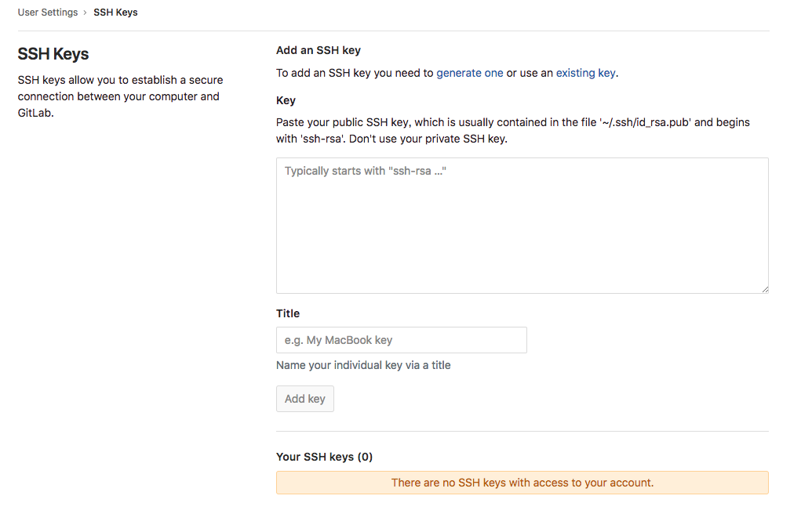

gitlab¶
- 一个基于 GIT 的源码托管解决方案
- 基于 Ruby on rails 开发
- 集成了 nginx postgreSQL redis sidekiq 等组件
安装¶
| 组件 | 作用 |
| nginx | 静态 Web 服务器 |
| gitlab-shell | 用于处理 Git 命令和修改 authorized keys 列表 |
| gitlab-workhorse | 轻量级的反向代理服务器 |
| logrotate | 日志文件管理工具 |
| postgresql | 数据库 |
| redis | 缓存数据库 |
| sidekiq | 用于在后台执行队列任务（异步执行） |
| unicorn | Gitlab Rails 应用是托管在这个服务器上面的 |
RHEL/CentOS¶
安装并配置必要的依赖项
在 CentOS7/RHEL 系统中，下面的命令将会在系统防火墙中开放 HTTP/HTTPS 和 SSH 端口
sudo yum install -y curl policycoreutils-python openssh-server sudo systemctl enable sshd sudo systemctl start sshd sudo firewall-cmd --permanent --add-service=http sudo firewall-cmd --permanent --add-service=https sudo systemctl reload firewalld
接下来，安装Postfix以发送通知电子邮件。如果要使用其他解决方案发送电子邮件，请跳过此步骤并在安装GitLab后配置外部SMTP服务器。
sudo yum install postfix sudo systemctl enable postfix sudo systemctl start postfix添加 GitLab 软件包存储库并安装软件包
新建
/etc/yum.repos.d/gitlab-ce.repo, 内容为：cat << "EOF" > /etc/yum.repos.d/gitlab-ce.repo [gitlab-ce] name=Gitlab CE Repository baseurl=https://mirrors.tuna.tsinghua.edu.cn/gitlab-ce/yum/el$releasever/ gpgcheck=0 enabled=1 EOF
sudo yum makecache sudo yum install -y gitlab-ce
浏览主机并登陆
首次访问时，您将被重定向到密码重置屏幕。提供初始管理员帐户的密码，您将被重定向回登录屏幕。使用默认帐户的用户名
root登录。
Ubuntu¶
安装并配置必要的依赖项
sudo apt-get update sudo apt-get install -y curl openssh-server ca-certificates
接下来，安装Postfix以发送通知电子邮件。如果要使用其他解决方案发送电子邮件，请跳过此步骤并在安装GitLab后配置外部SMTP服务器。
sudo apt-get install -y postfix
在Postfix安装期间，可能会出现配置屏幕。选择 “Internet Site” 并按Enter键。使用服务器的外部DNS作为“邮件名称”，然后按Enter键。如果出现其他屏幕，请继续按Enter键接受默认值。
添加GitLab软件包存储库并安装软件包
首先信任 GitLab 的 GPG 公钥:
curl https://packages.gitlab.com/gpg.key 2> /dev/null | sudo apt-key add - &>/dev/null
再选择你的 Debian/Ubuntu 版本，文本框中内容写进
/etc/apt/sources.list.d/gitlab-ce.listsudo cat << EOF > /etc/apt/sources.list.d/gitlab-ce.list deb https://mirrors.tuna.tsinghua.edu.cn/gitlab-ce/ubuntu xenial main EOF
安装 gitlab-ce ：
sudo apt-get update sudo apt-get install gitlab-ce
浏览主机并登陆
首次访问时，您将被重定向到密码重置屏幕。提供初始管理员帐户的密码，您将被重定向回登录屏幕。使用默认帐户的用户名
root登录。
命令¶
状态查询¶
通过命令可以查看各服务组件的运行状态
gitlab-ctl status
run: alertmanager: (pid 12966) 4279s; run: log: (pid 12980) 4279s
run: gitaly: (pid 12895) 4281s; run: log: (pid 12978) 4279s
run: gitlab-monitor: (pid 12928) 4280s; run: log: (pid 12936) 4280s
run: gitlab-workhorse: (pid 12877) 4281s; run: log: (pid 12950) 4280s
run: logrotate: (pid 20523) 726s; run: log: (pid 12952) 4280s
run: nginx: (pid 12398) 4332s; run: log: (pid 12951) 4280s
run: node-exporter: (pid 12620) 4314s; run: log: (pid 12924) 4280s
run: postgres-exporter: (pid 12987) 4279s; run: log: (pid 13069) 4278s
run: postgresql: (pid 12125) 4372s; run: log: (pid 12864) 4281s
run: prometheus: (pid 12943) 4280s; run: log: (pid 12961) 4279s
run: redis: (pid 12050) 4378s; run: log: (pid 12863) 4281s
run: redis-exporter: (pid 12705) 4302s; run: log: (pid 13068) 4279s
run: sidekiq: (pid 12371) 4334s; run: log: (pid 12931) 4280s
run: unicorn: (pid 12328) 4340s; run: log: (pid 12930) 4280s
也可以指定查看某个服务
gitlab-ctl status nginx
run: nginx: (pid 12398) 4463s; run: log: (pid 12951) 4411s
查看日志¶
如果想查看某个服务的日志，可以使用如下命令
gitlab-ctl tail nginx
==> /var/log/gitlab/nginx/current <==
==> /var/log/gitlab/nginx/error.log <==
==> /var/log/gitlab/nginx/gitlab_access.log <==
192.168.47.1 - - [27/Sep/2018:11:59:37 +0800] "POST /profile/preferences HTTP/1.1" 200 585 "http://192.168.47.132/profile/preferences" "Mozilla/5.0 (Macintosh; Intel Mac OS X 10_13_6) AppleWebKit/537.36 (KHTML, like Gecko) Chrome/69.0.3497.100 Safari/537.36"
192.168.47.1 - - [27/Sep/2018:11:59:42 +0800] "POST /profile/preferences HTTP/1.1" 200 585 "http://192.168.47.132/profile/preferences" "Mozilla/5.0 (Macintosh; Intel Mac OS X 10_13_6) AppleWebKit/537.36 (KHTML, like Gecko) Chrome/69.0.3497.100 Safari/537.36"
192.168.47.1 - - [27/Sep/2018:11:59:43 +0800] "GET /profile/keys HTTP/1.1" 200 7587 "http://192.168.47.132/profile/preferences" "Mozilla/5.0 (Macintosh; Intel Mac OS X 10_13_6) AppleWebKit/537.36 (KHTML, like Gecko) Chrome/69.0.3497.100 Safari/537.36"
192.168.47.1 - - [27/Sep/2018:11:59:43 +0800] "GET /assets/webpack/pages.profiles.keys.963cb5f3.chunk.js HTTP/1.1" 200 803 "http://192.168.47.132/profile/keys" "Mozilla/5.0 (Macintosh; Intel Mac OS X 10_13_6) AppleWebKit/537.36 (KHTML, like Gecko) Chrome/69.0.3497.100 Safari/537.36"
192.168.47.1 - - [27/Sep/2018:11:59:45 +0800] "GET /profile/chat_names HTTP/1.1" 200 6725 "http://192.168.47.132/profile/keys" "Mozilla/5.0 (Macintosh; Intel Mac OS X 10_13_6) AppleWebKit/537.36 (KHTML, like Gecko) Chrome/69.0.3497.100 Safari/537.36"
192.168.47.1 - - [27/Sep/2018:11:59:47 +0800] "GET / HTTP/1.1" 200 7539 "http://192.168.47.132/profile/chat_names" "Mozilla/5.0 (Macintosh; Intel Mac OS X 10_13_6) AppleWebKit/537.36 (KHTML, like Gecko) Chrome/69.0.3497.100 Safari/537.36"
192.168.47.1 - - [27/Sep/2018:12:01:58 +0800] "GET /projects/new HTTP/1.1" 200 13013 "http://192.168.47.132/" "Mozilla/5.0 (Macintosh; Intel Mac OS X 10_13_6) AppleWebKit/537.36 (KHTML, like Gecko) Chrome/69.0.3497.100 Safari/537.36"
192.168.47.1 - - [27/Sep/2018:12:01:58 +0800] "GET /assets/webpack/commons~pages.projects~pages.projects.activity~pages.projects.artifacts.browse~pages.projects.artifa~1485fd35.d346ca1a.chunk.js HTTP/1.1" 200 7340 "http://192.168.47.132/projects/new" "Mozilla/5.0 (Macintosh; Intel Mac OS X 10_13_6) AppleWebKit/537.36 (KHTML, like Gecko) Chrome/69.0.3497.100 Safari/537.36"
192.168.47.1 - - [27/Sep/2018:12:01:58 +0800] "GET /assets/webpack/pages.projects.new.0fa98a30.chunk.js HTTP/1.1" 200 1667 "http://192.168.47.132/projects/new" "Mozilla/5.0 (Macintosh; Intel Mac OS X 10_13_6) AppleWebKit/537.36 (KHTML, like Gecko) Chrome/69.0.3497.100 Safari/537.36"
192.168.47.1 - - [27/Sep/2018:12:02:11 +0800] "GET /import/github/new HTTP/1.1" 200 6206 "http://192.168.47.132/projects/new" "Mozilla/5.0 (Macintosh; Intel Mac OS X 10_13_6) AppleWebKit/537.36 (KHTML, like Gecko) Chrome/69.0.3497.100 Safari/537.36"
==> /var/log/gitlab/nginx/gitlab_error.log <==
==> /var/log/gitlab/nginx/access.log <==
也可以前往服务组件的日志目录进行查看：
ll /var/log/gitlab/
total 0
drwx------ 2 gitlab-prometheus root 82 Sep 27 11:01 alertmanager
drwx------ 2 git root 82 Sep 27 11:01 gitaly
drwx------ 2 git root 82 Sep 27 11:01 gitlab-monitor
drwx------ 2 git root 216 Sep 27 11:00 gitlab-rails
drwx------ 2 git root 30 Sep 27 10:59 gitlab-shell
drwx------ 2 git root 82 Sep 27 11:01 gitlab-workhorse
drwx------ 2 root root 47 Sep 27 11:00 logrotate
drwxr-x--- 2 root gitlab-www 131 Sep 27 11:00 nginx
drwx------ 2 gitlab-prometheus root 82 Sep 27 11:01 node-exporter
drwx------ 2 gitlab-psql root 82 Sep 27 11:01 postgres-exporter
drwx------ 2 gitlab-psql root 82 Sep 27 11:01 postgresql
drwx------ 2 gitlab-prometheus root 82 Sep 27 11:01 prometheus
drwxr-xr-x 2 root root 28 Sep 27 10:59 reconfigure
drwx------ 2 gitlab-redis root 82 Sep 27 11:01 redis
drwx------ 2 gitlab-redis root 82 Sep 27 11:01 redis-exporter
drwx------ 2 git root 82 Sep 27 11:01 sidekiq
drwx------ 2 git root 134 Sep 27 11:01 unicorn
配置¶
安装完成后需要进行的配置，配置文件如下表所示：
| 路径 | 内容 |
/var/opt/gitlab/git-data/repostitories/root |
库默认存储目录 |
/opt/gitlab |
应用代码和相应的依赖程序 |
/var/opt/gitlab |
gitlab reconfigure 命令编译后的应用数据和配置文件，不需要人为修改配置 |
/etc/gitlab |
配置文件目录 |
/var/log/gitlab |
此目录下存放了 gitlab 各个组件产生的日志 |
/var/opt/gitlab/backups/ |
备份文件生成的目录 |
修改配置文件¶
因为 gitlab 是使用 ruby 编写的，所以它的配置文件后缀名是 rb。
vim /etc/gitlab/gitlab.rb
external_url 'your_ip_address_or_domain_name'
修改完成之后，需要重新加载配置文件，执行如下命令：
sudo gitlab-ctl reconfigure
执行完成后，通过浏览器访问IP地址或域名，因为首次访问，Gitlab 需要你为 root 设置一个新的密码。

注册完成之后，就会跳转到访问页面，此时你可以使用 root 用户访问，但是建议额外注册一个管理员用户来管理 Gitlab 服务。

变更主配置文件¶
每当我们要变更配置文件，需要执行以下步骤
gitlab-ctl reconfigure重置配置文件gitlab-ctl show-config验证配置文件gitlab-ctl restart重启配置文件
权限管理¶
使用 root 用户进入 Gitlab 服务首页，如下所示
点击导航栏中的 admin area 小扳手进入管理界面
创建用户¶
点击
New User按钮，创建新的用户。
进入新建用户配置页面

配置选项
内容 选项 含义与作用 Account Name 账户名称 Username 用户名 Email 邮箱地址 Password Password 密码 Password confirmation 确认密码 Access Projects limit 项目限制 Can create group 是否能创建组 Access level Regular (普通用户) Access level Admin（管理员） External 除非明确授予访问权限，否则外部用户无法查看内部或私有项目。此外，外部用户无法创建项目或组。 Profile Acatar 头像 Skype Linkedin Twitter Website
创建组¶
为什么需要有组？比如公司现在有开发团队，有不同项目，可以按照不同项目来分配组，组内包含了不同的成员。
点击
New Group按钮，创建新的用户组。
进入新建组配置页面

配置选项
选项 含义与作用 Group path 组项目 URL 路径 Group name 组项目名称 Description 组项目描述 Group avatar 组项目图标 Visibility Level Private（该组及其项目只能由成员查看） Internal（任何登录用户都可以查看该组和任何内部项目） Public（无需任何身份验证即可查看该组和任何公共项目） Allow users to request access（如果公开或内部可见性，则允许用户请求访问权限） Large File Storage 允许该组中的项目使用Git LFS Two-factor authentication 要求此组中的所有用户都设置双因素身份验证 组创建成功

组授权
组创建完成后，组内是没有用户的，创建组的用户就要赋权给其他的用户
选择用户加入组

设置用户在组中的角色
查看组成员

创建项目¶
点击
New project按钮，创建新的项目。
进入新建项目配置页面

选项配置
选项 含义与作用 Project name 项目名称 Project URL 项目URL Project slug 项目块 Project description 项目描述 Visibility Level Private（私有） Internal（内部） Public（公有） Initialize repository with a README、 初始化存储库的 README 文件
授权项目用户¶
给用户添加密钥
当我们创建完成了组、用户与项目之后，用户需要上传公钥，否则 SSH 协议不能使用。
点击页面右上方的用户头像

进入用户配置页面，查看左侧用户配置选项
点击
SSH keys，为用户添加 SSH 公钥
本地生成密钥对
用户本地主机生成密钥对
$ ssh-keygen -b 4096 -t rsa -f ~/.ssh/gitlab -N '' Generating public/private rsa key pair. Your identification has been saved in /Users/renkeju/.ssh/gitlab. Your public key has been saved in /Users/renkeju/.ssh/gitlab.pub. The key fingerprint is: SHA256:s427VY2KNaGXemMwu3ird02IK4/lo7OHCA7vLHfcAmI renkeju@laptop.local The key's randomart image is: +---[RSA 4096]----+ | | | | | . | | . o o | | S.=.o . | |oEo .&.+. | |.= + o .B.Bo | |..+ = ==**... | | +o. .*@B= | +----[SHA256]-----+
查看密钥对
$ ll .ssh/gitlab* -rw------- 1 renkeju staff 3.2K 9 27 15:46 .ssh/gitlab -rw-r--r-- 1 renkeju staff 746B 9 27 15:46 .ssh/gitlab.pub
复制公钥
$ cat .ssh/gitlab.pub ssh-rsa AAAAB3NzaC1yc2EAAAADAQABAAACAQDIAmL6Hgb1hyi8ErvF2kd0o4lYVwn8EecdyMBrSViOjj0FxFz5NBXVZgZziuKiYN9EBQt+cf+ehbUquLJY/w5S3Rg08x8QMKnJCtQ0vK8vmuO6ljUxHlBzyQiSs4dQWIwhAUL5hJ+BrAHp+PbPvuX7nwZILPCGLZTlMIBTWIQtUwdZQDQmWZ0xxsXlHoa0w4NNgUcJOgrFF2A0E4jrzAOdUKWQfhCSBXEd6BZJ+QGOcRmIL3fPasJL3+B8X5GNs56DpXeByXLGSwgU605bog9oU6N3WqHvoLa1LwwUmpfospEB1DimS/7a31nMPera026Hvr851QUUAxZGjpYxZodJ1QcscH4ZOgafFZnH+8UiU6LWreb4cj/o56i+TuKntOAlQNb6R0M9C4E3B5BQI8l6Ob5nkr7ltujDTJGtTFPlF0oBxEqgkpnvjkLicZ6biCDa3f2bEU7k5Ez/kyrA1w639gnfF58KzyZuuhM9HG1ANK4KO9LGr/5MMqjbkr8ksiqcNG17YSmdQVWqmLU5Ai2tEnA5KLjHwiv2MXrzpBe1elIUXW7AHps+Tx+e/Q56K3vfJ43adxh+E+cFDqPyjpsBWdc6m7Js7hXuQ2Z5iFSVfyh9YxwmJudHLTkhTZhJi18qjnPyNy9Q/WwKVRq0NWXfqcd3aWjvmNXLe7HAXfhi7Q== renkeju@laptop.local
配置公钥
将公钥黏贴到文本框内

已添加的公钥列表